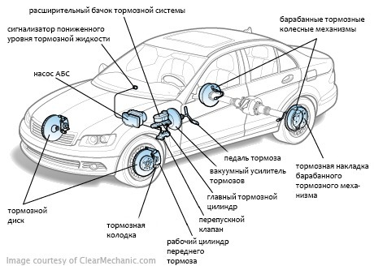

Как Тормозит Ваш Автомобиль?
Тормозная система Вашего автомобиля - это одна из тех вещей, которые как только Вы о ней подумаете, тут же ломается (или Вы ее ломаете). И вот неожиданно Ваши тормоза начинают Вас сильно интересовать. Так зачем же ждать неприятного сюрприза? Общее понимание тормозной системы Вашего автомобиля позволит Вам сэкономить деньги и ездить в большей безопасности. В конце концов, чем больше Вы знаете, тем лучше Вы будете заботиться о Вашем автомобиле.
Теория тормозов
Спросите у своего приятеля физика, и он ответит Вам, что тормоза преобразуют кинетическую энергию движения автомобиля в тепло. Переводим на удобоваримый язык: тормоза служат для того, чтобы остановить автомашину. Или более точно, тормоза останавливают колеса. И в этом заключается большая разница, потому что даже самые мощные тормоза в мире не смогут остановить Вашу автомашину в том случае, если имеется небольшое или же вообще отсутствует сцепление с поверхностью дороги. До упора вдавите в пол педаль тормоза, и наверняка колеса перестанут крутиться, но автомашина будет весело продолжать скользить юзом. Вам же, с другой стороны, будет совсем не до веселья. Многие водители полагают, что занос автомобиля происходит в результате <отказа тормозов>. Хотя фактически в данной ситуации имелась ошибка водителя, который не понял условия сцепления и не начал вести автомашину соответствующим образом.
Основы торможения
Типичная тормозная система <пассажир-автомобиль> является относительно простой. Когда Вы нажимаете ногой на педаль тормоза, та сила, с которой Вы давите на педаль, передается на прибор, который называется главный тормозной цилиндр. Главный тормозной цилиндр имеет поршень, который оказывает давление на систему гидравлических тормозных трубок, которые ведут к каждому колесу автомобиля. На каждом колесе данная тормозная жидкость под давлением оказывает воздействие на тормоза, надавливая на поршень, который оказывает воздействие на тормозные колодки, которые охватывают и сжимают вращающийся барабан или диск. Трение замедляет вращение колес, и в, свою очередь, всего автомобиля.
Когда тормозные детали (тормозные колодки, и т.д.) почти стираются, металлические шайбы сконструированы таким образом, что они будут создавать визжащий шум, когда Вы будете нажимать на тормоз и это (надеемся) заставит насторожиться водителя и подскажет ему, что тормозная колодка нуждается в замене. Обратите внимание на это предупреждение. Стертая тормозная колодка обладает меньшим сопротивлением, нежели новая и это снижает эффективность работы тормозов. Плюс, в случае, если Вы в течение довольно длительного времени будет игнорировать данное предупреждение, Вы можете нанести серьезные повреждения роторам, барабанам, и другим частям. И даже если вы регулярно меняете тормозные колодки, обычно требуется небольшое дополнительное сервисное обслуживание после поездок на длинные расстояния. Поверхность барабанов и дисков стирается неравномерно при нормальной эксплуатации. Поэтому периодически требуется их повторная машинная обработка, чтобы они продолжали нормально работать.
Все современные тормоза во много раз мощнее, чем двигатель автомобиля. Поэтому при полностью открытом дросселе Вы можете легко остановить даже очень мощный автомобиль, нажав на тормоза. Все тормоза также имеют стояночный тормоз (иногда его называют ручной тормоз). Он работает независимо от основной тормозной системы. Стояночный тормоз обычно воздействует на задние колеса. Он приводится в действие вручную на тот случай, если откажет гидравлическая тормозная система.
Как лучше тормозить
Многие инженерные находки в течение всей истории автомобиля смогли существенно улучшить работу и надежность тормозной системы. Механические тормоза являются стандартными почти на всех современных пассажирских автомобилях. Они используют энергию двигателя для усиления работы тормозов. Поэтому Вам не приходится правой ногой выполнять всю работу. Для того чтобы избежать возможность неожиданного и полного отказа тормозов, современные автомобили снабжены в действительности двумя параллельными тормозными системами. Каждая система контролирует два колеса автомобиля. Таким образом, если одна система полностью откажет, то другая тормозная система все равно сможет остановить автомобиль (хотя и сделает это менее эффективно).
Сами тормоза с годами претерпели также существенные улучшения. Несколько десятилетий тому назад широко использовались тормоза барабанного типа, и они до сих пор используются на задних колесах у многих автомобилей. Данные тормоза используют в работе узел в виде барабана, который вращается вместе с колесом. Внутри барабана <башмаки> вместе с заменяемым фрикционным материалом прижимаются с силой к барабану, когда Вы нажимаете на педаль тормоза. Тормоза барабанного типа работают неплохо. Однако при этом образуется сильное тепло, которого достаточно, чтобы снизить эффективность торможения, если Вы делаете это слишком резко. Снижение эффективности тормозов происходит тогда, когда имеется резкое перегревание тормозов. Мощность торможения сильно падает, и тормозные детали и колодки могут выйти из строя.
Существенное улучшение произошло при использовании дисковых тормозов. В настоящее время они повсеместно используются на передних колесах почти у всех автомобилей. Дисковая тормозная система снабжена металлическим диском или ротором (или же сделанным из другого экзотического материала у некоторых гоночных автомобилей). Он вращается вместе с колесом. Также имеется стационарно установленный <кронциркуль>, который во время торможения оказывает давление на диски с заменяемыми фрикционными материалами. Так как эти диски обдуваются сильным потоком воздуха, во время движения, данный тип тормозов менее подвержен перегреву и отказу в работе.
Дополнительно, часто происходит внутренняя вентиляция дисков, что позволяет увеличить воздушный поток. Возвращаясь назад, когда отказ тормозов был общей проблемой во время долгих крутых горных перегонов, водители переключали трансмиссию на более низкую скорость, и осуществляли торможение с помощью двигателя, который забирал на себя часть нагрузки, которая выпадала на тормоза. С современными тормозами этого больше не требуется, кроме ситуации, когда Вы тянете на буксире тяжелый груз вниз по склону.
Антиблокировочная тормозная тистема (ABS)
Автомобильные покрышки дают максимальное торможение, когда тормозное усилие передается на край колеса, но не более этого. Когда тормоза заблокированы и колеса идут юзом (скользят), уменьшается реальное торможение и теряется прямое рулевое управление. Электронная антиблокировочная тормозная система (АБС) дала большие преимущества в управлении автомобилем и сократила тормозной путь в большинстве ситуаций, в частности во время дождя или при поворотах. В АБС используется сочетание электронного и гидравлического управления, что позволяет выполнять нормальное торможение вплоть до точки остановки колес. Затем система вступает в дело и сокращает давление жидкости на тормоза, что позволяет колесам тормозить максимально дальше в данных дорожных условиях.
Стандартная система АБС снабжена сенсорами, установленными скорости на каждом колесе, они снабжают постоянной информацией центральный компьютер АБС. Компьютер использует эти данные для определения общей скорости автомашины и момента, когда начинается блокировка колес. Так как каждое колесо контролируется независимо (через четырехканальную систему АБС), тормозное давление ограничивается автоматически или сокращается только в отношении только того колеса, которое может быть заблокировано.
Менее сложной системой является трехканальная АБС. Она используется на некоторых автомобилях. Она позволяет осуществлять независимое управление каждым передним колесом по отдельности, но оказывает одинаковое тормозное влияние на оба задних колеса. Измеримые различия в работе между двумя типами АБС весьма незначительны. Оба этих типа АБС имеют существенные преимущества перед автомобилями, которые не оборудованы такими тормозами АБС. И когда колесо блокируется у того автомобиля, который не снабжен системой АБС, единственным способом заставить его снова вращаться и полностью восстановить контроль в движении состоит в том, чтобы водитель ослабил нажатие на тормозную педаль. Но это в свою очередь ослабляет торможение сразу на всех четырех колесах. Система АБС оказывается в состоянии обеспечить более короткий тормозной путь в трудных дорожных условиях, нежели обычная тормозная система, даже если автомобилем управляет водитель высокого класса.
Не нужно никакой специальной подготовки, чтобы ездить на автомобиле, снабженном системой АБС. Хотя, возможно, Вам придется переучиваться в отношении техники управления, которая была применима для автомобилей без системы АБС. При управлении автомобилями с устаревшей тормозной системой, водителям, как правило, объясняли, чтобы они "нагнетали" торможение на помпу, когда начиналась блокировка. Эта утрамбовка предназначалась для того, чтобы помочь обычному водителю избежать полной блокировки тормозов и скольжения вперед с потерей управления автомобилем. С системой же АБС Вам нужно будет просто нажать на педаль тормоза как можно сильнее для того, чтобы остановиться. Если имеется предельное сцепление, Вы можете почувствовать пульсирующие толчки на педали тормоза, что будет вполне нормальным явлением. В течение всего тормозного пути Вы можете контролировать управление и поэтому Вы можете уклониться и свернуть в сторону, чтобы избежать столкновения с препятствием.
Команда www.gazu.ru
Еще немного о тормозных системах автомобилей ...